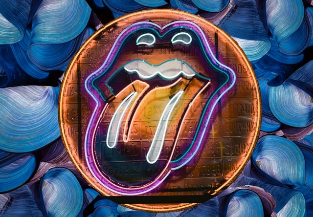

latest news
New Rolling Stones exhibition hits London
Vivamus ultricies semper ligula, a molestie turpis iaculis eu. Cras consequat purus et diam consequat, lacinia placerat elit euismod. Integer accumsan viverra tellus non pulvinar. Phasellus aliquet luctus finibus. Nulla eu elit massa. Sed gravida dictum ex nec rutrum. Aliquam erat volutpat. Sed accumsan ante lacinia mauris rutrum pellentesque. Nulla ligula arcu, malesuada ultrices purus ut, mollis pellentesque tortor.